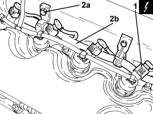
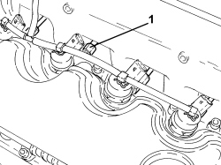
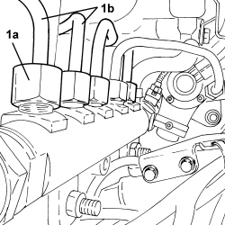
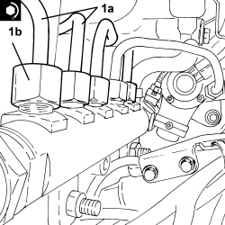
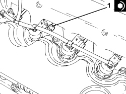
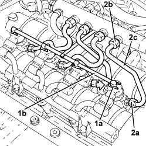
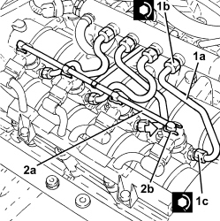

1060F36 PIPES (ALL) FROM FUEL MANIFOLD TO INJECTOR - R.R.
- Path
- Procedures > 10 ENGINE > 1060 DIESEL INJECTION SYSTEM > 1060F INJECTORS AND PIPES > 1060F36 PIPES (ALL) FROM FUEL MANIFOLD TO INJECTOR - R.R.
- Kind
- repair procedure (removal / refitting; the operation number is the code)
- Applies to
- engines: 1.9 JTD 8v, 1.9 JTD 16v, 2.4 JTD 20v; all production periods
- Interactive page
- https://sloeber94.github.io/elrnDB-fCrm/en/#/194002173
Applies to: engines: 1.9 JTD 8v; all production periods
 Removing
Removing
 Refitting
RefittingOp. 5530B52 BATTERY SUPPORT/DRIP TRAY - R.R
Op. 1048B27 RIGID PIPE FOR AIR INLET TO THROTTLE BODY - R R
Op. 1060G50 THROTTLE BODY - R.R
Op. 1080C24 E.G.R. SYSTEM SOLENOID - R + R
1. Disconnect the electrical connections from the injectors.
Description | Connector | |
|---|---|---|
1 | Injector |
2. Undo the bolts (2a) and rmove the electrical wiring (2b) aside.

Applies to: engines: 1.9 JTD 8v; all production periods
1. Undo the pipe fastening connectors for the pipes from the fuel manifold to the injectors, injector side.

Applies to: engines: 1.9 JTD 8v; all production periods
1. Unscrew the connectors (1a) and remove the pipes from the fuel manifold to the injectors (1b).

Applies to: engines: 1.9 JTD 8v; all production periods
Refitting
Removing1. Place the pipes from the fuel manifold to the injectors (1a) in their housings and secure them tightening the connectors (1b) to the recommended torque.
Component | Fastening | dia | Value (daNm) | Validity |
|---|---|---|---|---|
Pipes from fuel manifold to injectors | Connector | M14 | (fuel manifold side) 2.2 - 2.4 | 1.9 JTD 8v |

Applies to: engines: 1.9 JTD 8v; all production periods
1. Tighten the connectors for the pipes from the fuel manifold to the injectors, injector side, to the recommended torque.
Component | Fastening | dia | Value (daNm) | Validity |
|---|---|---|---|---|
Pipes from fuel manifold to injectors | Connector | M12 | (injector side) 2.2 - 2.4 | 1.9 JTD 8v |

Applies to: engines: 1.9 JTD 8v; all production periods
- Place the electrical wiring in position and fasten it using the bolts.
- Connect the electrical connections to the injectors.
Op. 1080C24 E.G.R. SYSTEM SOLENOID - R + R
Op. 1060G50 THROTTLE BODY - R.R
Op. 1048B27 RIGID PIPE FOR AIR INLET TO THROTTLE BODY - R R
Applies to: engines: 1.9 JTD 16v, 2.4 JTD 20v; all production periods
Removing
RefittingOp. 1016A10 SOUND-PROOFING COVER - R.R
1. Push clips (1a) by hand and disconnect the pipe from the injectors to the fuel recovery manifold (1b), from the fastenings on the injectors.
2. Unscrew the connectors (2a) and (2b) and remove the pipes from the fuel manifold to injectors (2c).

Applies to: engines: 1.9 JTD 16v, 2.4 JTD 20v; all production periods
Refitting
Removing1. Place the pipes from the fuel manifold to the injectors (1a) in their housings and secure them tightening the connectors (1b) and (1c) to the recommended torque.
2. Connect the pipe from the injectors to the fuel recovery manifold (2a) to the injectors by pushing home until clips (2b) can be heard to click into place.

Applies to: engines: 1.9 JTD 16v, 2.4 JTD 20v; all production periods
Topics linked from this page (7)
- 1016A10 SOUND-PROOFING COVER - R.R
- 1048B27 RIGID PIPE FOR AIR INLET TO THROTTLE BODY - R R
- 1060G50 THROTTLE BODY - R.R
- 1080C24 E.G.R. SYSTEM SOLENOID - R + R
- 5530B10 BATTERY - R+R
- 5530B52 BATTERY SUPPORT/DRIP TRAY - R.R
- N070 INJECTOR